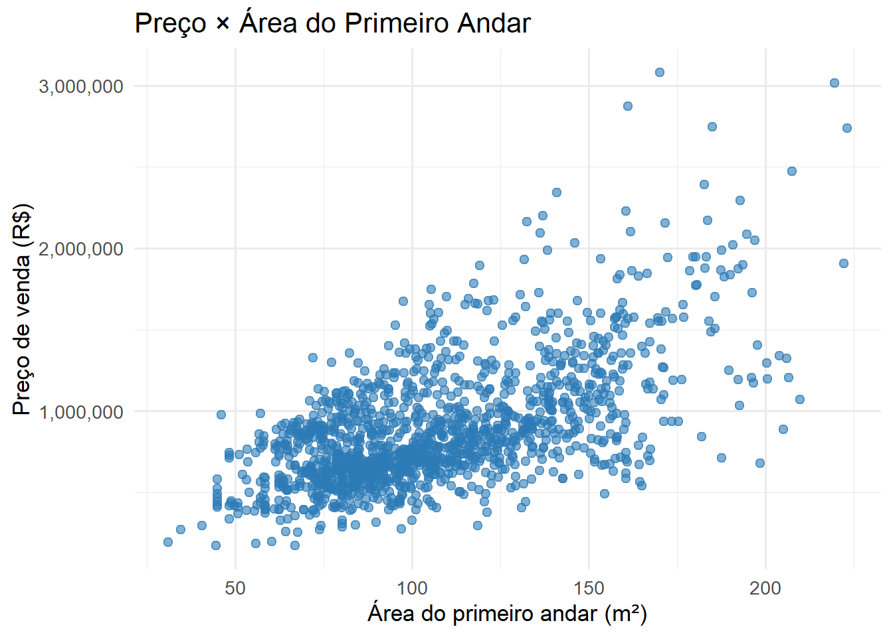
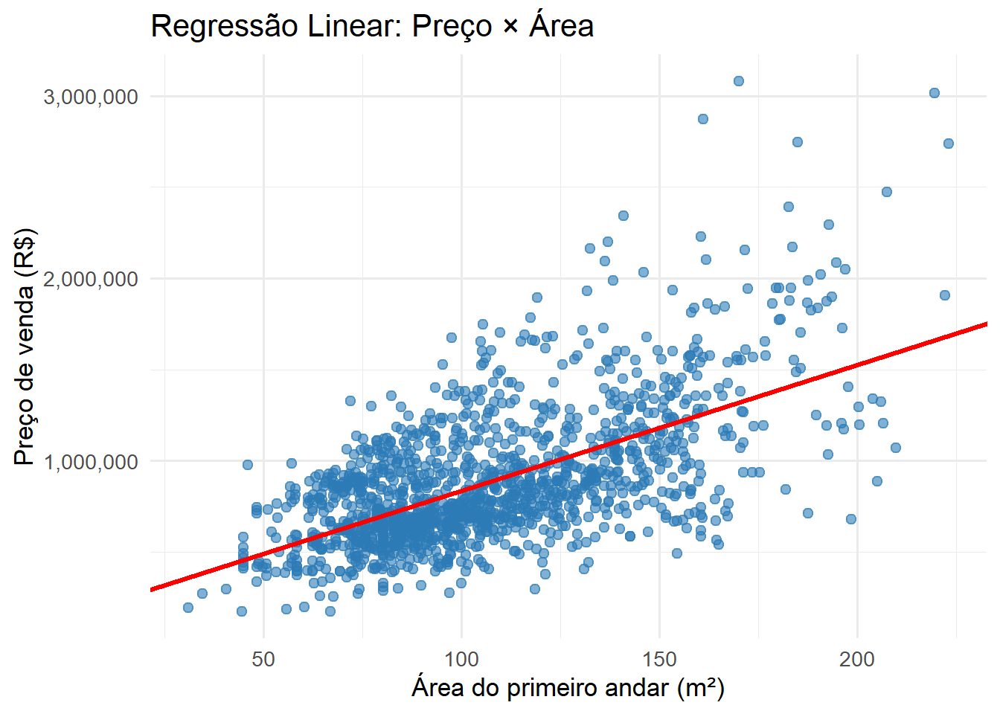
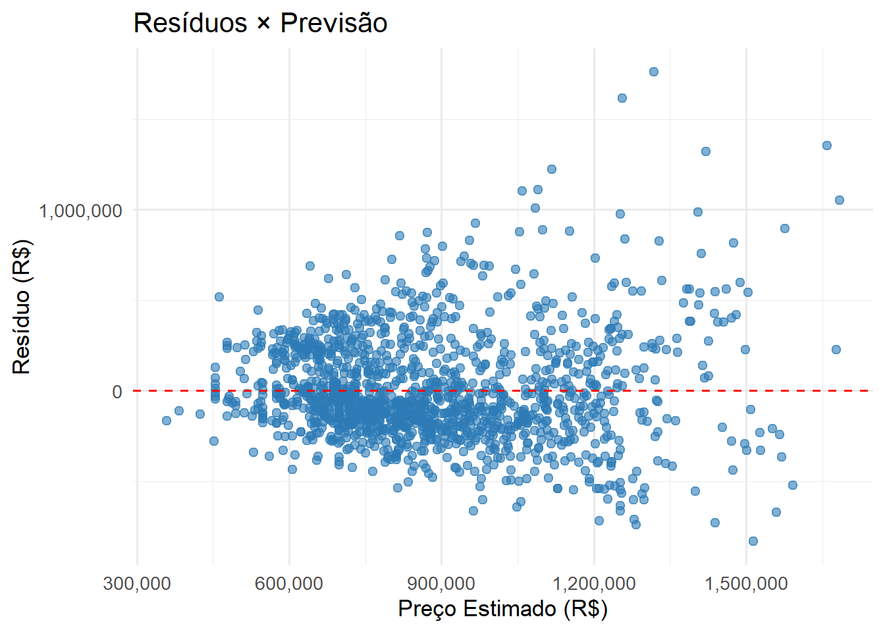
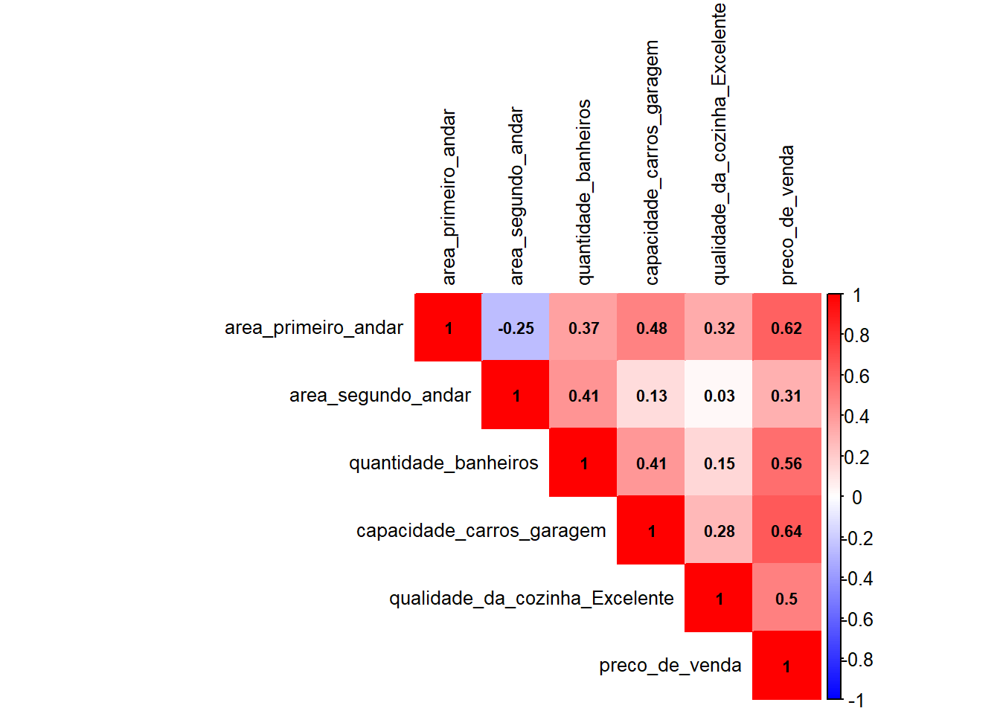

| 1º Andar (m²) | 2º Andar? | 2º Andar (m²) | Banheiros | Garagem (m²) | Cozinha Excel. | Preço (R$) |
|---|---|---|---|---|---|---|
| 79.52 | 1 | 79.34 | 2 | 548 | 0 | 1027905 |
| 117.24 | 0 | 0.00 | 2 | 460 | 0 | 894795 |
| 85.47 | 1 | 80.45 | 2 | 608 | 0 | 1101855 |
| 89.28 | 1 | 70.23 | 1 | 642 | 0 | 690200 |
| 106.37 | 1 | 97.82 | 2 | 836 | 0 | 1232500 |
| 73.95 | 1 | 52.58 | 1 | 480 | 0 | 704990 |
Quanto Vale uma Casa? A Estatística que Responde
R
Estatística
Regressão
Data Science
O problema que toda imobiliária tem
Imagine que você é analista de dados e recebe o seguinte desafio: “Preciso precificar centenas de imóveis. Como faço isso?”
A resposta ingênua, ou não tão ingênua assim, dependendo do seu repertório seria: “olha o preço dos vizinhos”. Curiosidade: existe um algoritmo famoso chamado KNN (K-Nearest Neighbors) que faz literalmente isso. Mas hoje vamos por outro caminho.
Como cientista de dados, podemos construir um modelo matemático que, a partir de dados históricos, estima quais características de um imóvel determinam o seu preço e como cada uma delas se associa à variação do preço. Repare que escrevi estima, não aprende. Modelos não aprendem. Eles ajustam parâmetros para minimizar erros. Essa distinção parece sutil, mas faz toda a diferença quando você precisa interpretar e questionar os resultados.
O dataset é inspirado na competição House Prices do Kaggle, simplificado para fins didáticos. Trabalharemos com as seguintes variáveis:
| Variável | Descrição |
|---|---|
area_primeiro_andar |
Área útil do andar térreo (m²) |
area_segundo_andar |
Área útil do segundo andar (m²) |
quantidade_banheiros |
Número de banheiros |
capacidade_carros_garagem |
Capacidade da garagem (m²) |
qualidade_da_cozinha_Excelente |
1 = cozinha de alto padrão, 0 = demais |
preco_de_venda |
🎯 Variável alvo |
1. Conhecendo os dados
Antes de qualquer modelo, precisamos enxergar o que temos. As primeiras linhas do dataset já revelam muito:
O dataset tem 1438 imóveis e 7 variáveis. Sem valores ausentes, o que nos poupa da etapa de limpeza.
2. Existe relação entre área e preço?
Antes de calcular qualquer coisa, precisamos ver o que está acontecendo. O gráfico de dispersão geralmente é o primeiro passo.

A “nuvem” de pontos sobe da esquerda para a direita. Imóveis maiores tendem a custar mais. Mas será que é uma relação forte?
3. Medindo a força da relação: o coeficiente de correlação
O coeficiente de correlação de Pearson (r) quantifica a força e a direção de uma relação linear entre duas variáveis. Ele varia entre −1 e 1:
- r = 1: correlação positiva perfeita
- r = 0: sem relação linear
- r = −1: correlação negativa perfeita
No nosso dataset, a correlação entre área e preço é r = 0.62 , uma correlação positiva moderada a forte. A área é um bom preditor, mas não é o único fator que interessa.
4. Encontrando a melhor reta: regressão linear simples
Olhando o gráfico, é possivel traçar “uma” reta passando por eles(volte ao gráfico e veja!). Mas qual é a melhor reta? Da estatística, sabemos que esse reta deve minimizar a diferença entre os valores previstos e os valores reais. Essas diferenças se chamam resíduos.
A função de regressão é:
\[\hat{Y} = \beta_0 + \beta_1 X\]
Onde \(\hat{Y}\) é o preço estimado, \(X\) é a área, \(\beta_0\) é o intercepto e \(\beta_1\) é o quanto o preço sobe a cada 1 m² adicional.
O R encontra automaticamente os coeficientes pelo método dos mínimos quadrados. O resultado do nosso modelo:
\[\text{preço} = 144.777 + 6.899 \times \text{área}\]
Ou seja: cada metro quadrado adicional agrega, em média, R$ 6.899 ao preço do imóvel.

5. O modelo é bom? Métricas e testes
R²: quanto o modelo explica?
O R² mede a proporção da variação do preço que o modelo explica. No nosso modelo simples, R² = 0.38 , ou seja, a área sozinha explica 38% da variação dos preços. É um começo promissor, mas há muito mais para avaliar.
Teste t — a variável realmente importa?
O teste t verifica se o coeficiente da área é estatisticamente diferente de zero:
- H₀: a área não afeta o preço (coeficiente = 0)
- H₁: a área afeta o preço (coeficiente ≠ 0)
O p-valor obtido é 2.5e-151 — essencialmente zero. Rejeitamos H₀ com segurança: a área tem efeito real e significativo sobre o preço.
Análise de resíduos — o modelo está bem calibrado?
Todo modelo de regressão tem duas premissas básicas sobre os resíduos:
- Média igual a zero: os erros não têm viés sistemático
- Homocedasticidade: a variância dos erros é constante
A média dos resíduos é 0 , ou seja, zero. ✅
Mas observe o gráfico abaixo. Ele conta uma história importante.

Os pontos parecem estar se afastando da linha pontilhada vermelha conforme o preço aumenta. Depois voltamos a isso.
6. Indo além: regressão múltipla
A área explica 38% dos preços. E o restante? Outras características do imóvel estão escondidas aí. A regressão múltipla permite incorporar todas elas simultaneamente.
Primeiro, um mapa de calor das correlações para identificar as variáveis mais promissoras:

Com o mapa de calor em mãos, construímos modelos progressivamente mais ricos e comparamos o RSE (Erro Padrão Residual) de cada um, lembre-se que quanto menor, melhor:
| Modelo | Variáveis | R² | RSE (R$) |
|---|---|---|---|
| Modelo 1 (+ 2º andar) | 2 | 0.608 | 231622 |
| Modelo 2 (+ banheiros) | 3 | 0.620 | 228016 |
| Modelo 3 (+ garagem) | 4 | 0.682 | 208933 |
| Modelo Final (+ cozinha) | 5 | 0.737 | 190100 |
O modelo final, com 5 variáveis, apresenta o maior R² e o menor RSE. É o mais preciso do conjunto.
A equação do modelo final
Assim como fizemos na regressão simples, podemos escrever a equação completa com os coeficientes reais:
\[\hat{Y} = -116.240 + 5.045 \cdot X_{\text{1º andar}} + 3.072 \cdot X_{\text{2º andar}} + 76.934 \cdot X_{\text{banheiros}} + 460 \cdot X_{\text{garagem}} + 376.267 \cdot X_{\text{cozinha}}\]
Lendo a equação:
- Cada m² do 1º andar agrega R$ 5.045 ao preço
- Cada m² do 2º andar agrega R$ 3.072 ao preço
- Cada banheiro adicional agrega R$ 76.934 ao preço
- Cada m² de garagem agrega R$ 460 ao preço
- Uma cozinha excelente agrega R$ 376.267 ao preço — mantendo tudo mais constante
7. Validando o modelo final: teste F
Na regressão simples usamos o teste t para uma variável. Na regressão múltipla, o teste F valida o conjunto todo:
- H₀: nenhuma variável afeta o preço
- H₁: pelo menos uma variável afeta o preço
O p-valor do teste F é essencialmente zero. O conjunto de variáveis tem poder explicativo real sobre o preço. ✅
8. Prevendo preços de imóveis novos
Agora a parte mais concreta: usar o modelo para precificar imóveis que ele nunca viu.
| 1º Andar (m²) | 2º Andar? | 2º Andar (m²) | Banheiros | Garagem (m²) | Cozinha Excel. | Preço Estimado (R$) |
|---|---|---|---|---|---|---|
| 160 | 1 | 160 | 2 | 2 | 1 | 1713621 |
| 175 | 0 | 0 | 3 | 1 | 1 | 1374191 |
| 145 | 1 | 145 | 2 | 1 | 0 | 1215131 |
| 190 | 1 | 190 | 3 | 2 | 0 | 1657814 |
| 155 | 0 | 0 | 2 | 3 | 1 | 1197274 |
| 170 | 1 | 170 | 3 | 1 | 1 | 1871270 |
| 135 | 1 | 135 | 2 | 0 | 0 | 1133496 |
| 200 | 1 | 200 | 3 | 2 | 1 | 2115256 |
| 125 | 0 | 0 | 1 | 1 | 0 | 591799 |
| 185 | 1 | 185 | 3 | 2 | 0 | 1617227 |
O que aprendemos
Partimos de uma pergunta simples — quanto vale uma casa? — e chegamos a um pipeline completo:
- Exploração visual para verificar linearidade
- Correlação de Pearson para medir força das relações
- Regressão simples para encontrar a melhor reta
- Métricas (R², RSE) e testes (t, F) para validar o modelo
- Análise de resíduos para checar premissas
- Regressão múltipla para incorporar mais variáveis
- Previsão de novos valores
Regressão linear não é apenas uma fórmula. É um processo de perguntas e respostas: o que influencia o preço? Com que força? O modelo está errando de forma sistemática? Essas perguntas guiam o cientista de dados em direção a modelos cada vez mais honestos e úteis.
Limitações — o modelo tem problemas, e tudo bem
Eu poderia encerrar o artigo no ponto anterior e fingir que está tudo certo. Mas não estaria sendo honesto com você.
Volte ao gráfico de resíduos da regressão simples. Observe com calma o que acontece da esquerda para a direita:
- Para imóveis baratos (preço estimado entre 400k e 700k): os resíduos ficam concentrados em torno de zero. O modelo acerta bem.
- Para imóveis de alto valor (acima de 1 milhão): a dispersão explode. Os erros chegam a ±1.000.000. O modelo se perde.
Isso tem nome: heterocedasticidade. O padrão de funil clássico. A variância dos erros não é constante — ela cresce junto com o valor do imóvel.
Por que isso acontece? Pense bem. Imóveis baratos são relativamente previsíveis: área e número de banheiros já explicam boa parte do preço. Imóveis de luxo são outra história. Acabamento, localização exata, arquitetura, vista, história do imóvel, características que nosso modelo simplesmente não enxerga. A incerteza cresce porque o modelo não tem as informações certas para esse segmento.
O modelo é bom para imóveis comuns. Para imóveis de luxo, ele chuta.
O que poderia melhorar?
- Transformação logarítmica: aplicar
log(preco_de_venda)como variável dependente. Em dados de preço, erros percentuais costumam ser mais estáveis que erros absolutos. É a solução mais clássica para esse padrão. - Mais variáveis de qualidade: acabamento, localização, idade do imóvel. O modelo atual não tem nada que diferencie um apartamento simples de um imóvel de alto padrão além da cozinha.
- Modelos não-lineares: Se o foco for precisão nas previsões, Random Forest ou Gradient Boosting capturam relações mais complexas que a reta não consegue.
Mas sabe o que é mais importante do que qualquer uma dessas soluções técnicas? Saber identificar o problema. Um cientista de dados que entrega um modelo de regressão linear sem olhar o gráfico de resíduos é como um médico que prescreve o remédio sem ler o resultado do exame.
Isso é o que separa um cientista de dados de um apertador de botões.